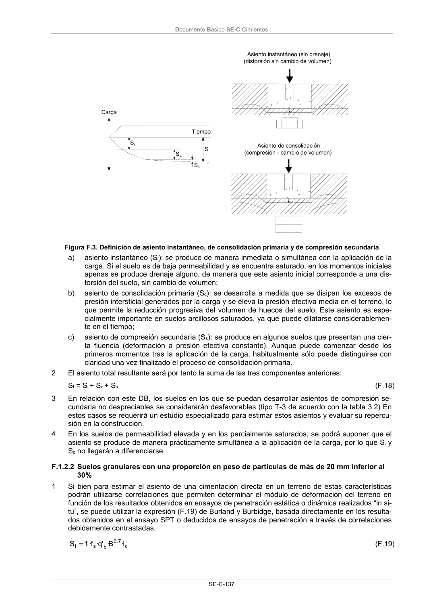

DB-SE-C Cimientos · edición 2019-12-20 · capa oficial
Documento DB-SE-C-oficial · SHA-256 del PDF a71133f4b0dca253e45ea3071c70f2a512354bcc5cd841bf89b1a502f567ac5e
Página física 142 de 165.
Copia fiel del PDF fuente · Fuente oficial
Ficha de la disposición en la fuente oficial
Formato: Texto de la página (Markdown)
Documento Básico SE-C Cimientos SE-C-137 Figura F.3. Definición de asiento instantáneo, de consolidación primaria y de compresión secundaria a) asiento instantáneo (Si): se produce de manera inmediata o simultánea con la aplicación de la carga. Si el suelo es de baja permeabilidad y se encuentra saturado, en los momentos iniciales apenas se produce drenaje alguno, de manera que este asiento inicial corresponde a una dis- torsión del suelo, sin cambio de volumen; b) asiento de consolidación primaria (Sc): se desarrolla a medida que se disipan los excesos de presión intersticial generados por la carga y se eleva la presión efectiva media en el terreno, lo que permite la reducción progresiva del volumen de huecos del suelo. Este asiento es espe- cialmente importante en suelos arcillosos saturados, ya que puede dilatarse considerablemen- te en el tiempo; c) asiento de compresión secundaria (Ss): se produce en algunos suelos que presentan una cier- ta fluencia (deformación a presión efectiva constante). Aunque puede comenzar desde los primeros momentos tras la aplicación de la carga, habitualmente sólo puede distinguirse con claridad una vez finalizado el proceso de consolidación primaria. 2 El asiento total resultante será por tanto la suma de las tres componentes anteriores: St = Si + Sc + Ss (F.18) 3 En relación con este DB, los suelos en los que se puedan desarrollar asientos de compresión se- cundaria no despreciables se considerarán desfavorables (tipo T-3 de acuerdo con la tabla 3.2) En estos casos se requerirá un estudio especializado para estimar estos asientos y evaluar su repercu- sión en la construcción. 4 En los suelos de permeabilidad elevada y en los parcialmente saturados, se podrá suponer que el asiento se produce de manera prácticamente simultánea a la aplicación de la carga, por lo que Si y Sc no llegarán a diferenciarse. F.1.2.2 Suelos granulares con una proporción en peso de partículas de más de 20 mm inferior al 30% 1 Si bien para estimar el asiento de una cimentación directa en un terreno de estas características podrán utilizarse correlaciones que permiten determinar el módulo de deformación del terreno en función de los resultados obtenidos en ensayos de penetración estática o dinámica realizados “in si- tu”, se puede utilizar la expresión (F.19) de Burland y Burbidge, basada directamente en los resulta- dos obtenidos en el ensayo SPT o deducidos de ensayos de penetración a través de correlaciones debidamente contrastadas. c 7 . 0 b s l i I· B · 'q· f· f S (F.19)
